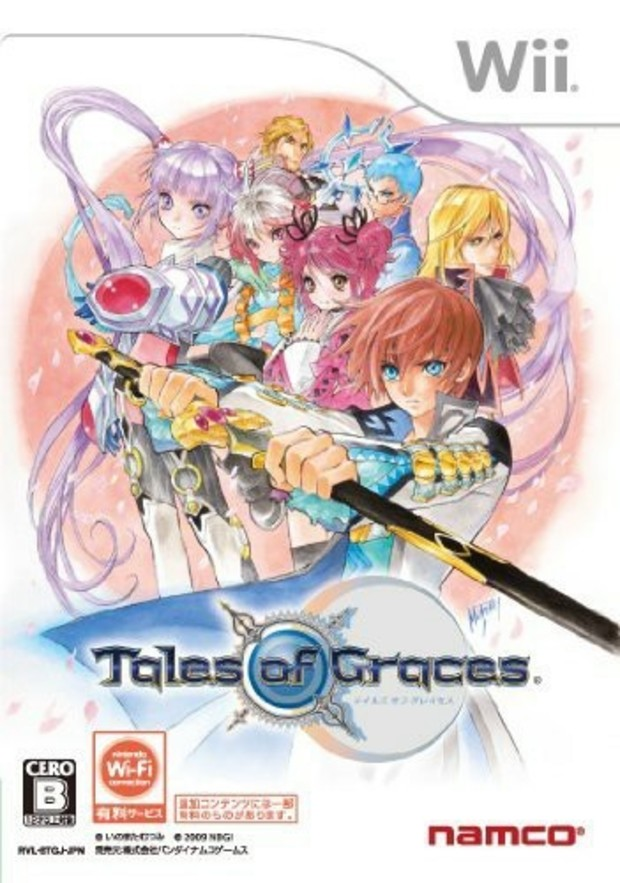

テイルズオブグレイセス
 2009年12月10日発売プラットフォーム：Wii , PS3（テイルズオブグレイセス エフ）
シリーズ第12作目。
本作ではTPではなくCCというパラメータを消費して術技を使用する。CCは戦闘中のみ使用可能になるパラメータであるので、フィールド移動中に術技を使用することは不可能となっている。また、エレスゲージと呼ばれるパラメータも存在しており、味方側のエレスゲージが一定量に達すると有利な状況に、敵側のエレスゲージが一定量に達すると不利な状況になってしまうので、如何にして味方側のエレスゲージを溜めていくかが戦闘のカギの一つとなっている。
本作のストーリーは、主人公たちの幼少時代から始まるというシリーズを通しても比較的珍しい導入がなされている。3Dモデルだけでなく、ステータス画面やグルーヴィーチャットでも幼少期の立ち絵が用意されているので、成長後と見比べてみるのもまた楽しい。
PS3移植版は『テイルズオブグレイセス エフ』として発売され、本編終了から半年後の未来が描かれた「未来への系譜編」が収録されている。系譜編で新たに追加されたシステムもあり、戦闘面でプレイヤーを飽きさせないようにする配慮が見られる。